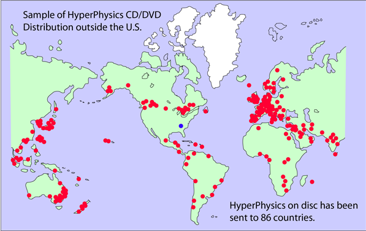
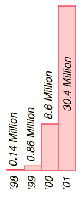
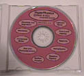
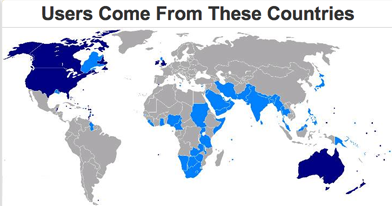

| Merlot Snapshot | | Merlot Classic Award winner for 2005 "This site was honored because of its comprehensive coverage of most of physics, the creative use of multimedia and linking, and the impact it has had on students worldwide. Online tutorials cover a wide range of physics topics, including modern physics and astronomy. Material is organized through extensive concept maps." |
|
About HyperPhysics
Rationale for Development
HyperPhysics is an exploration environment for concepts in physics which employs concept maps and other linking strategies to facilitate smooth navigation. For the most part, it is laid out in small segments or "cards", true to its original development in HyperCard. The entire environment is interconnected with thousands of links, reminiscent of a neural network. The bottom bar of each card contains links to major concept maps for divisions of physics, plus a "go back" feature to allow you to retrace the path of an exploration. The side bar contains a link to the extensive Index, which itself is composed of active links. That sidebar also contains links to relevant concept maps. The rationale for such concept maps is to provide a visual survey of conceptually connected material, and it is hoped that they will provide some answers to the question "where do I go from here?". Whether you need further explanation of concepts which underly the current card content, or are seeking applications which go beyond it, the concept map may help you find the desired information.
Part of the intent for this exploration environment is to provide many opportunities for numerical exploration in the form of active formuli and standard problems implemented in Javascript. An active exploration in physics will typically lead you to something which needs to be quantified, and it is hoped that the many Javascript-enabled calculations will provide many opportunities to answer "What if .." type questions.
New content for HyperPhysics will be posted as it is developed. The intent is to maintain the entire HyperPhysics project on the Web with stable locations so that links to it may be established with confidence that they will be there for an extended period of time. As the basic phase nears completion, the author is interested in extensions to specific applied areas. If you are interested in developing specific material for a specialized course, you might consider building it upon this framework with links to HyperPhysics to provide the basic conceptual background. The entire HyperPhysics project can be made available on a cross-platform DVD or USB memory since it will remain compatible with the standard web browsers.
Who is using HyperPhysics?
A resource that was initiated as a resource for local high school physics teachers whom I had taught has expanded into an intensively used website worldwide.

CD or DVD versions have been sent to 86 countries to date, and translations into German, Italian, Chinese, and Español have been licensed and are underway.
| This is an offer to post translated versions of HyperPhysics for free access worldwide, just as the English version is offered. If you wish to translate parts of HyperPhysics for the use of your students, we will post a full mirror version of HyperPhysics dedicated to your language with all links so that your translated portions will have full access to the links to all of HyperPhysics. It is suggested that just the displayed text be translated, leaving all the links intact, thereby reducing the labor of translation. While the Copyright of HyperPhysics must remain with the project, our commitment is to provide you with a DVD version of the full HyperPhysics website with a license for a closed mirror (at least password protected) at your institution so that you can make full use of your translation efforts for teaching at your institution, even during the early stages of translation. When a large portion has been translated, a more flexible license will be provided to make sure you are not hindered from making use of your own work of translation. |
|  |
The hit rate reached about 50 million file hits per year in the fifth year and logging was suspended. Informal statistics from the server log indicate about 15 hits per user on average, so 50 million hits translates to over 3 million users per year. More recent probes have indicated about 2 million file accesses per day.
Email traffic has increased proportionately, and an informal tally of the emails indicates the following frequency of users.
- Students.
- High school teachers.
- Engineering and technical personnel in industry.
- Independent learners.
Search engines give over 200,000 links to HyperPhysics, mostly from educators or educational institutions.
|
Please respect the Copyright
HyperPhysics (©C.R. Nave, 2017) is
a continually developing base of
instructional material in physics. It is not freeware or shareware. It must not be copied or mirrored without authorization. The author is open to proposals for its use for non-profit instructional purposes. The overall intent has been to develop a wide ranging exploration environment which could be of use to students and teachers.
|
Contact
Carl R. (Rod) Nave
Department of Physics and Astronomy
Georgia State University
Atlanta, Georgia 30302-5060
Email: RodNave@gsu.edu
Selected by the SciLinks program, a service of National Science
Teachers Association. Copyright 2001.
|
If you want a DVD or USB version:
Use Paypal (usually the easiest) or send a check or money order for $50 payable to Rod Nave to the address at left. Western Union and Moneygram transfers have also been successfully used by international users. Wire transfer information is available by email. All proceeds from DVDs are applied to maintaining and developing the HyperPhysics site as a free web resource. DVDs or USB memory sticks are made when payment is received so that the content is fully current as of that date. A data DVD is the default format, but if you cannot access a DVD, please specify a USB memory stick in your order.
|  | If you prefer to pay by credit card, you may do so by clicking on the PayPal logo. Note: if you have the HyperPhysics Index open, close the Index before clicking on the PayPal button. A paid receipt will be included with the shipment in case you can get reimbursement from your institution. Having the DVD frees you from dependence upon a web connection in your classroom or location of use. |
Close Index before
clicking PayPal
|
A number of educational institutions are using the material in computer-equipped classrooms, and for that purpose, lab-packs of DVDs can be prepared for your institution. Email the author for details. Another possibility is an internal license to post HyperPhysics on an internal site, which would permit you to modify and add to it as a base. Such licenses are subject to the restriction that the internal mirror site must be at least password-protected from the world wide web. Such licenses are being used by a number of educational institutions and training centers to facilitate the development of specific content without having to "reinvent the wheel" by filling in all the introductory material.
|
|
| Merlot Snapshot | | Merlot Classic Award winner for 2005 "This site was honored because of its comprehensive coverage of most of physics, the creative use of multimedia and linking, and the impact it has had on students worldwide. Online tutorials cover a wide range of physics topics, including modern physics and astronomy. Material is organized through extensive concept maps. " |
|
| | Psigate, the Physical Science Information Gateway, has posted 59 reviews of topics in HyperPhysics and 195 Database entries as of January 2006. |
|
 | |  | Classified as "Gold Certified" and awarded a place in Nerdy Data's hall of fame for having more activity than 99% of the sites surveyed. |
|
Availability on DVD or CD
If you are interested, the full current content of HyperPhysics can be provided to you on cross-platform DVD or USB memory for the cost of $50. It can be accessed by Mac or PC with your web browser exactly as you access it on the web. At present, that means the omission of a half-dozen Quicktime movies that are instructive, but not essential to the content. The proceeds from the DVDs contribute to the costs of providing the website for free individual use on the web worldwide. Further development of the HyperPhysics environment is also supported by the DVDs. The HyperPhysics Project has been kept free from University or commercial financial support in order to maintain freedom to develop it in flexible ways. Advertisements have been refused as counter to the educational intent of the site.
HyperPhysics on DVD is distributed for individual use and does not grant the right to copy or distribute material from the DVD. One provision of this offering is that it must not be opened to the world wide web from your computer acting as a server. Mirror sites to the web are prohibited. Providing it to the web from just one main server is important for error checking in the development process.
The understanding upon distribution is that if you contribute
significant content to be added to the material (e.g., text, graphics, images, etc.)
and it is incorporated into HyperPhysics, your contribution will be acknowledged
on the added material and you will be sent the next revision of the DVD
free of charge as compensation.
While copying and modifying the material
for personal use or class presentation use is permitted under the terms of this
offering, all rights to the material are reserved and no part of the material may be reproduced for any commercial purpose. Arrangements for distribution to students for a fee to cover costs may be made with the author. The intent of the offering is the enhancement of physics and astronomy teaching, and uses of the material which are strictly educational will be quickly agreed to without additional charges.
NASA images and other public domain images included were downloaded from
the Internet and may be freely used. Other images are the property of the
author and covered by the copyright unless otherwise noted in the credits
in the individual documents.
The server for HyperPhysics is located at Georgia State University and makes use of the University's network. HyperPhysics is provided free of charge for all classes in the Department of Physics and Astronomy through internal networks. The intellectual property rights and the responsibility for accuracy reside wholly with the author, Dr. Rod Nave.
Quicktime is a trademark of the Apple Computer Corporation.
HyperPhysics